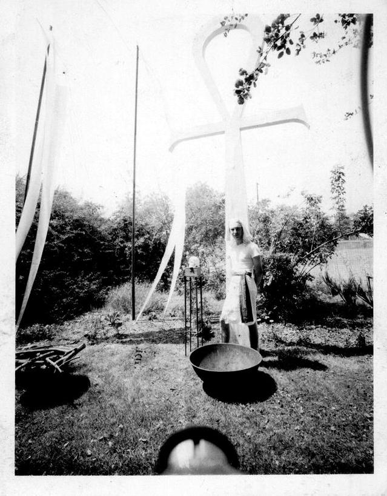

This undated photo was taken at a solstice event held in the back yard of Jerry Woods' mothers house in Arcadia, California. She was known as "Dancing Waters" due to her penchant for overwatering the plants. The person in the photo is Ancrew Grygus.Note the CD Skull Table to his right.
